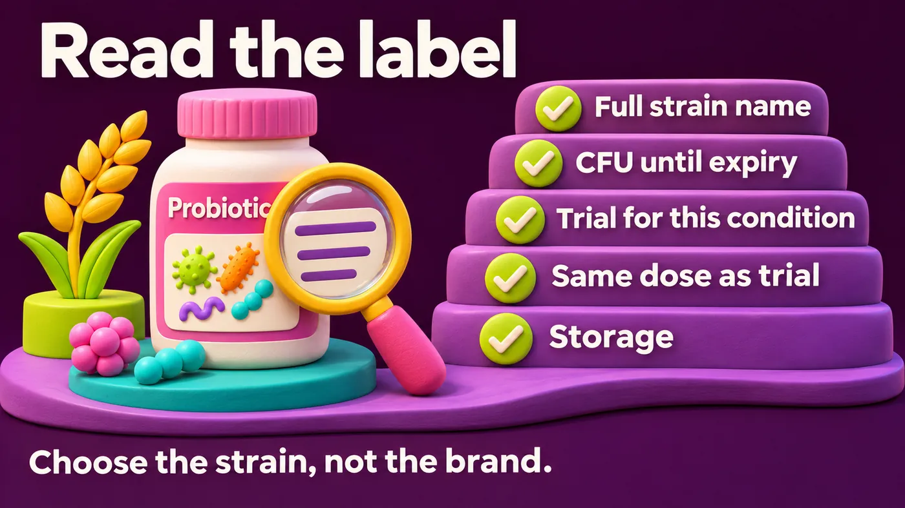
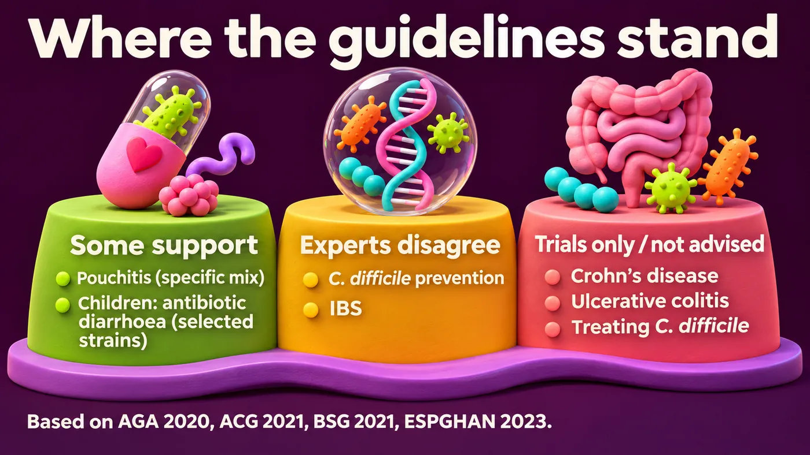

Learning objectives
After this module you should be able to:
- Explain why probiotic effects are strain-specific.
- Read a probiotic label critically.
- Name the situations where major guidelines support, limit or reject probiotics, and where they disagree.
- Run a safe, time-limited probiotic trial, and know when to avoid probiotics.
1Start with a patient: meet Huda
Huda is 52. She has had bloating and irregular stools for years. She has no red flags. Her simple tests, including celiac serology, are normal. She takes omeprazole daily. She shows you a product: "15 strains, 100 billion CFU". She asks: "Is this the best one?"
Predict first. What matters most when you judge this product?
- A. The number of strains.
- B. The number of CFU.
- C. Whether the exact strains, at that dose, were tested for her problem.
2Probiotics are strain-specific
- A probiotic name has three parts: genus, species and strain. Example: Lacticaseibacillus rhamnosus GG. "GG" is the strain.
- Two strains of the same species can act very differently. Evidence for one strain does not transfer to another.
- A mix (for example strain A + strain B) is tested as that mix. Its evidence belongs to that exact mix.
- More strains and more CFU (colony-forming units, a count of live microbes) do not mean more benefit. Dose and formulation must match the trial.
Back to Huda: the answer is C.

3Reading a label – five checks
- Are the strains named in full (genus, species, strain code)?
- Is the CFU count guaranteed until the expiry date, not just at manufacture?
- Is there a published trial for this exact product or strain, in this condition?
- Is the dose the same as in the trial?
- Are storage instructions clear (for example, keep refrigerated)?
If the label fails these checks, there is no trial-based reason to recommend it.
4What the guidelines say
Guidelines differ, because the evidence is mixed and often low quality. Here is the picture in plain words.
Prevention of C. difficile infection in adults taking antibiotics
- AGA 2020 [1] suggests certain specific strains or combinations (for example Saccharomyces boulardii, or defined two-, three- or four-strain mixes) over no probiotic. This is a conditional suggestion based on low-quality evidence.
- ACG 2021 recommends against probiotics to prevent C. difficile infection in patients on antibiotics [2] (conditional recommendation).
- So the experts disagree. Decisions are made case by case.
Treatment of established C. difficile infection, Crohn's disease and ulcerative colitis
- AGA 2020 [1] recommends probiotics only within clinical trials.
Pouchitis (inflammation of the surgical pouch made after colectomy for ulcerative colitis)
- AGA 2020 [1] suggests a specific eight-strain combination (conditional, very low-quality evidence).
Irritable bowel syndrome
- AGA 2020 [1]: only within clinical trials.
- ACG 2021: suggests against probiotics for global IBS symptoms [3].
- BSG 2021 [4]: probiotics may help global symptoms and pain. A trial of up to 12 weeks is reasonable, stopping if there is no benefit (weak recommendation, very low-quality evidence).
Children
- ESPGHAN 2023 [5] supports selected strains, such as L. rhamnosus GG or S. boulardii, to prevent antibiotic-associated diarrhoea when prevention is considered. Paediatric results should not be applied to adults.

5How a gastroenterologist runs a probiotic trial
When a trial is reasonable (for example, IBS under BSG advice), keep it simple:
- Diagnose first. Rule out red flags.
- Choose one identifiable product with evidence for that condition.
- Use the trial dose.
- Agree one goal with the patient, such as less pain or less bloating.
- Review at about 4 weeks and no later than 12 weeks.
- Stop if there is no clear benefit. Do not add a second or third product.
6When to avoid probiotics
- Critically ill patients, such as those in intensive care.
- Patients with central venous lines.
- Patients with severe immune suppression.
Probiotic organisms have been found in the blood of some ICU patients, matching the product they took (Yelin, Nat Med 2019 [6]). Saccharomyces bloodstream infections are also reported. These risks are rare, but serious.
7Test yourself
Choose an answer to see the explanation. Nothing is recorded.
1. A product has 15 strains and 100 billion CFU. What matters most?
Probiotic effects are strain-specific and dose-specific.
2. What does "GG" in L. rhamnosus GG refer to?
The strain code identifies the exact organism tested.
3. For preventing C. difficile infection in adults on antibiotics, the AGA and ACG:
AGA 2020 gives a conditional suggestion for specific strains. ACG 2021 recommends against.
4. Under BSG 2021, how long should a probiotic trial for IBS last before stopping if it does not help?
Stop if there is no benefit by 12 weeks.
5. In which patient should you avoid probiotics?
Probiotic bloodstream infections are reported in critically ill patients.
8Take-home message
Choose the strain, not the brand. Use a clear goal and a time limit. Diagnose first. Then treat the gut.
9Summary
- Effects are strain-specific. Evidence for one strain or mix does not transfer.
- Five label checks: full strain name, CFU to expiry, trial evidence, trial dose, storage.
- Guidelines differ: AGA 2020, ACG 2021 and BSG 2021 disagree on C. difficile prevention and IBS.
- Trial: one product, one goal, review by 4–12 weeks, stop if no benefit.
- Avoid in critical illness, central lines and severe immune suppression.
References
- Su GL, et al. AGA Clinical Practice Guidelines on the Role of Probiotics in the Management of Gastrointestinal Disorders. Gastroenterology 2020;159(2):697–705. doi:10.1053/j.gastro.2020.05.059
- Kelly CR, et al. ACG Clinical Guidelines: Prevention, Diagnosis, and Treatment of Clostridioides difficile Infections. Am J Gastroenterol 2021;116(6):1124–47. doi:10.14309/ajg.0000000000001278
- Lacy BE, et al. ACG Clinical Guideline: Management of Irritable Bowel Syndrome. Am J Gastroenterol 2021;116(1):17–44. doi:10.14309/ajg.0000000000001036
- Vasant DH, et al. British Society of Gastroenterology guidelines on the management of irritable bowel syndrome. Gut 2021;70(7):1214–40. doi:10.1136/gutjnl-2021-324598
- Szajewska H, et al. Probiotics for the management of pediatric gastrointestinal disorders: position paper of the ESPGHAN Special Interest Group on Gut Microbiota and Modifications. J Pediatr Gastroenterol Nutr 2023;76(2):232–47. doi:10.1097/MPG.0000000000003633
- Yelin I, et al. Genomic and epidemiological evidence of bacterial transmission from probiotic capsule to blood in ICU patients. Nat Med 2019;25(11):1728–32. doi:10.1038/s41591-019-0626-9
How to cite this module
Desoky M. Probiotics – when a gastroenterologist uses them. Metabolic Liver Academy, version 1.0. Updated 2026-11-10. Available from: https://metabolicliveracademy.org/modules/gi-probiotics.html
For education only. This module summarises published evidence and guidelines; it does not replace clinical judgement, full guidelines or local drug labels. It is not accredited for CME credit. Disclaimer.